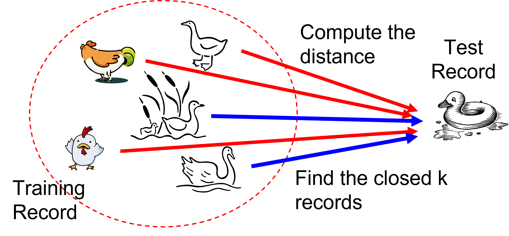
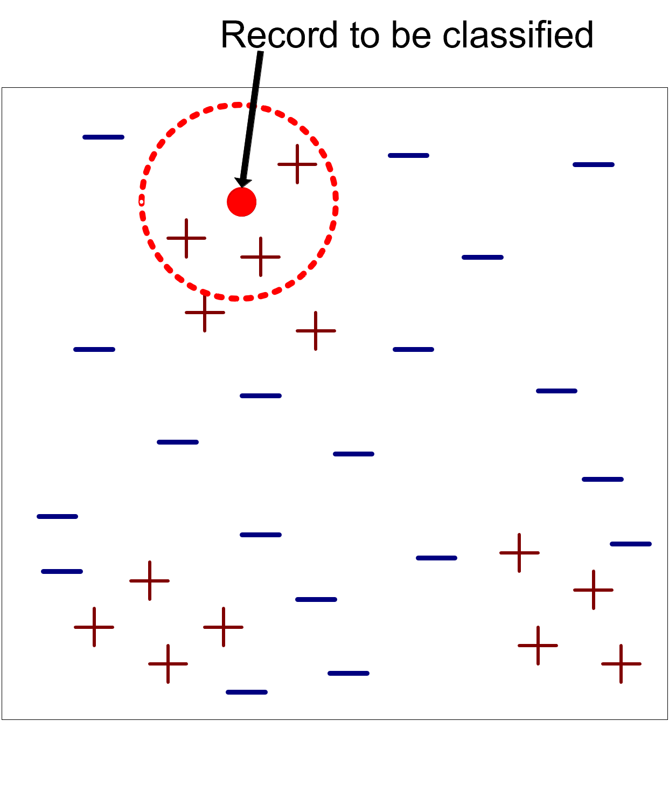
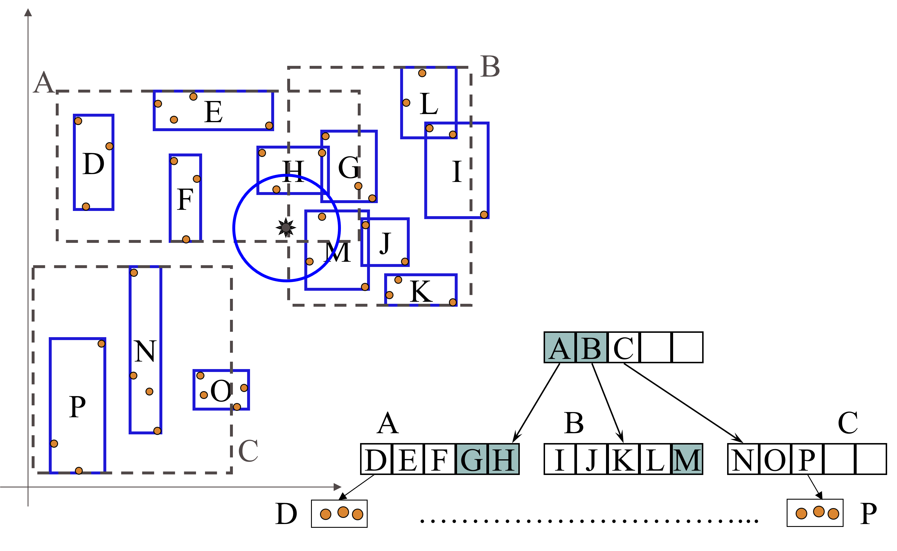

Machine Learning and Data Mining (Module I)
K-nearest neighbors
Matteo Francia
DISI — University of Bologna
m.francia@unibo.it
Motivating problem: classify by similar cases
A streaming service receives a new customer with no churn label.
- We already know the behavior and outcome of many previous customers
- Customers with similar usage patterns often have similar outcomes
- Can we predict the new customer’s class without learning an explicit model?
k-NN answer: find the most similar known customers and let their labels vote.
Learning objectives
By the end of this lecture, you will be able to:
- Explain instance-based learning and the role of a distance metric
- Compute a k-NN prediction, with and without distance weighting
- Select a suitable value of \(k\) using validation data
- Recognize why feature scaling is essential for distance-based learning
- Diagnose failure cases caused by irrelevant features and high dimensionality
Intuition: nearby points tend to behave alike
K-nearest neighbors is an instance-based method.
- Training is mostly memorization: store the labeled examples
- Prediction is local: inspect the neighborhood of the new record
- The learned boundary can be nonlinear because each region can vote differently

K-nearest neighbors
Lazy learning
k-NN is often called a lazy learner.
- Eager learners, such as trees and neural networks, build a model before prediction
- Lazy learners postpone most of the work until a new query arrives
- The prediction cost can therefore be high for large training sets
The key question becomes:
What does “similar” mean for these records?
Nearest-neighbor classifier

K-nearest neighbors
Requirements:
- A labeled training set
- A distance or similarity measure
- A value of \(k\), the number of neighbors
- A voting rule
Prediction workflow
For a new record \(z\):
- Calculate the distance from \(z\) to every training record
- Sort the training records by distance
- Select the first \(k\) records
- Predict the class with the largest vote
The result depends on both the data representation and the distance metric.
Common distance metrics
For two records \(x_i\) and \(z\) with \(d\) numeric features:
Euclidean distance:
\[
dist(x_i,z)=\sqrt{\sum_{j=1}^{d}(x_{ij}-z_j)^2}
\]
Manhattan distance:
\[
dist(x_i,z)=\sum_{j=1}^{d}|x_{ij}-z_j|
\]
Both are sensitive to the units used to measure each feature.
Worked example: majority vote
Suppose the three nearest training records to a new point \(z\) are:
| \(x_1\) |
0.8 |
stay |
| \(x_2\) |
1.1 |
churn |
| \(x_3\) |
1.3 |
churn |
- With \(k=1\), predict stay
- With \(k=3\), predict churn by a 2-to-1 majority
The prediction is local: a different neighborhood may follow a different rule.
Distance-weighted vote
Sometimes closer neighbors should count more.
A common weighted vote is:
\[
\hat{y}=\arg\max_{y \in Y}\sum_{(x_i,y_i)\in D_z} \frac{I(y_i=y)}{dist(x_i,z)}
\]
- Very close neighbors receive a larger weight
- Distant neighbors still contribute, but less
- Implementations usually handle zero-distance cases explicitly
Worked example: weighted vote
Using the same three neighbors:
| \(x_1\) |
0.8 |
stay |
1.25 |
| \(x_2\) |
1.1 |
churn |
0.91 |
| \(x_3\) |
1.3 |
churn |
0.77 |
Total weighted vote:
- stay: \(1.25\)
- churn: \(0.91 + 0.77\)
Prediction: stay.
Choosing the value of \(k\)
The choice of \(k\) controls how local the prediction is.
- Small \(k\): flexible, sensitive to noise, higher variance
- Large \(k\): smoother, more stable, higher bias
- Odd values of \(k\) can avoid ties in binary classification
Choose \(k\) using validation data or cross-validation, not the test set.
The \(k\) value: visual intuition
With \(k=1\), every training point can create its own tiny region.
With a larger \(k\), the boundary becomes smoother because each prediction averages over a wider neighborhood.
This is the same bias-variance trade-off seen in many classifiers:
- too local: follows noise
- too global: misses real local structure
Feature scaling is not optional
k-NN compares records using distances.
If features have very different numeric ranges, large-scale features dominate the distance even when they are not more informative.
Example:
age: 18 to 80weekly_sessions: 0 to 20annual_income: 10,000 to 1,000,000
Without scaling, income can dominate Euclidean distance.
Scaling example
Compare two customers with a query customer:
| A |
2 years |
20,000 EUR |
| B |
20 years |
500 EUR |
Euclidean distance on raw values is dominated by income:
\[
dist(A) \approx 20000,\qquad dist(B) \approx 500
\]
The model may treat B as closer, even if age is the predictive feature.
Standardization
Standardization converts each feature to:
\[
x'=\frac{x-\mu}{\sigma}
\]
- \(\mu\) is the feature mean
- \(\sigma\) is the feature standard deviation
- The transformed feature has mean 0 and standard deviation 1 on the training set
Fit the scaler on the training set only.
Min-max scaling
Min-max scaling converts each feature to:
\[
x'=\frac{x-\min(x)}{\max(x)-\min(x)}
\]
- Values are usually mapped to \([0,1]\)
- It preserves the shape of the distribution
- It can be sensitive to outliers
The right scaler is a modeling choice and should be evaluated with validation data.
Avoiding data leakage
Incorrect workflow:
- Scale the whole dataset
- Split into train and test sets
- Evaluate the model
This leaks information from the test set into preprocessing.
Correct workflow:
- Split into train and test sets
- Fit the scaler on the training set
- Transform train and test with the fitted scaler
- Evaluate once on the test set
Use pipelines
In scikit-learn, use a pipeline:
from sklearn.pipeline import Pipeline
from sklearn.preprocessing import StandardScaler
from sklearn.neighbors import KNeighborsClassifier
model = Pipeline([
("scaler", StandardScaler()),
("knn", KNeighborsClassifier(n_neighbors=5)),
])
The pipeline fits preprocessing only on the training folds during cross-validation.
Failure case: irrelevant features
Scaling fixes unequal units, but it does not remove useless dimensions.
If we add many irrelevant features:
- each feature contributes noise to the distance
- truly similar records may appear far apart
- prediction can degrade even after scaling
k-NN benefits from feature selection, dimensionality reduction, or careful feature engineering.
Failure case: high dimensionality
In high-dimensional spaces, distances often become less informative.
This is part of the curse of dimensionality.
- Points become sparse
- The nearest and farthest points can have surprisingly similar distances
- A huge number of examples may be needed to cover the space well
k-NN is strongest when the chosen features make neighborhoods meaningful.
Practical model-selection checklist
For k-NN, validate:
- Number of neighbors:
n_neighbors
- Weighting: uniform or distance-weighted
- Distance metric: Euclidean, Manhattan, or a domain-specific metric
- Scaling method: standardization, min-max scaling, or another transformation
- Feature set: remove irrelevant or redundant features
Keep the test set untouched until the final evaluation.
Computational cost
Naive prediction requires computing distances to many training records.
For \(n\) training records and \(d\) features:
- one prediction costs \(O(nd)\) with a brute-force search
- storing the training data costs \(O(nd)\)
- prediction can be slower than for eager models
Index structures can reduce the search cost in some low-dimensional settings.
The R-tree index structure (Guttman, 1984)
R-trees are extensions of B+-trees to multi-dimensional spaces.
B+-trees organize objects into:
- A set of nonoverlapping one-dimensional intervals
- Recursively nested pages from leaves to root
R-trees organize objects into:
- Overlapping multi-dimensional rectangles
- Recursively nested bounding regions
R-tree basic idea
- Recursively aggregate objects using minimum bounding rectangles (MBRs)
- Regions can overlap
- A 2-D range query can ignore regions that cannot contain relevant objects

R-tree
k-NN: strengths
- Very simple baseline
- No expensive training phase
- Naturally supports nonlinear decision boundaries
- Easy to adapt to multiclass classification
- Can work well when the distance metric matches the domain
k-NN: weaknesses
- Requires a meaningful distance metric
- Requires preprocessing for feature scaling
- Sensitive to noise and irrelevant features
- Prediction cost can be high for large datasets
- Performance may degrade in high-dimensional spaces
Check your understanding
A query point has five nearest-neighbor labels:
A, A, B, B, B
- What is the prediction for \(k=3\)? What about \(k=5\)?
- Could distance weighting change either answer?
- Which dataset split should you use to choose \(k\)?
- What preprocessing must be fitted on the training set before computing distances?
Summary: when should I use k-NN?
Use k-NN when:
- Similar cases are expected to have similar outputs
- The dataset is not too large, or an efficient neighbor search is available
- You want a flexible nonlinear baseline with almost no training time
Be careful when:
- Features use different scales
- Many features are irrelevant
- Prediction latency matters
- Data are sparse or high-dimensional
Remember: scale features, select the metric and \(k\) with validation data, and keep the test set untouched.